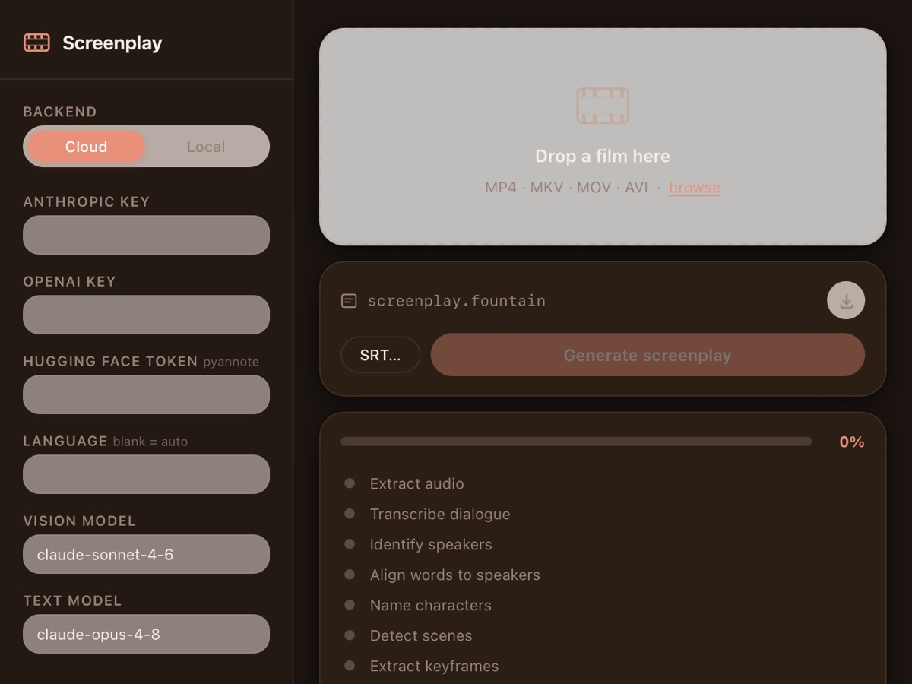

01
FTS
Film-to-Screenplay
Turns a film or video file into a structured screenplay in Fountain format.
- Audio extraction, transcription and speaker diarization, aligned into lines of dialogue.
- Scene detection and keyframes; Claude reads each scene's frames and nearby dialogue to write the scene heading and action.
- Claude maps anonymous speakers to character names and polishes the assembled draft scene by scene.
- Every stage is cached, so reruns skip finished work. A fully local mode runs without cloud APIs.
In development
macOS desktop app and command-line tool, used internally. Windows version in development.